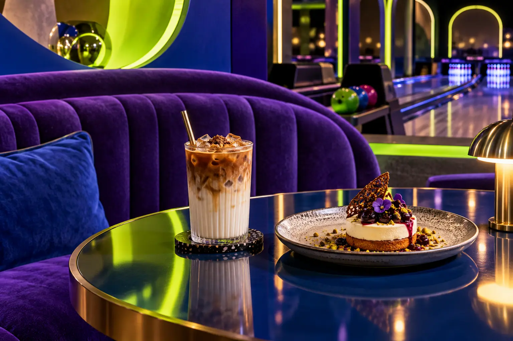

01
Coffee signatures
8K Special Latte, 24K Latte and familiar espresso-based choices.
An independent digital concept for a café inside 300 Bowling Club—bringing coffee, desserts, directions and contact options into one vivid mobile-first experience.

The public menu groups the offer into 8K special coffee, hot and cold coffee, manual brews, frappes, hot chocolate, juices, mocktails, iced tea and desserts.
8K Special Latte, 24K Latte and familiar espresso-based choices.
V60 and Turkish coffee, plus frappes, iced tea and mocktails.
Public listings include cheesecake, chocolate cake, brownies and other desserts.
Details checked against the Google Maps business profile on 9 October 2026. Opening times can change; please confirm before visiting.
The Maps profile places it inside 300 Bowling Club, in the bowling hall at J Mall.
Google Maps lists car delivery / curbside and contactless delivery in addition to dine-in.
No. This is an independent proposal by Amjad Dannan and is not endorsed by the business.
Call or open WhatsApp to confirm current hours and service details.
The image is AI-generated for illustration and is not a photograph of the café or its products. This page does not collect bookings, payments or personal data.